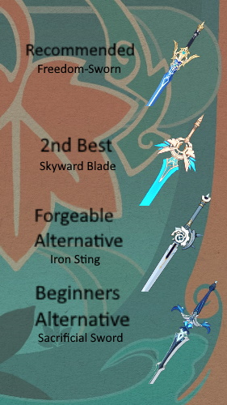
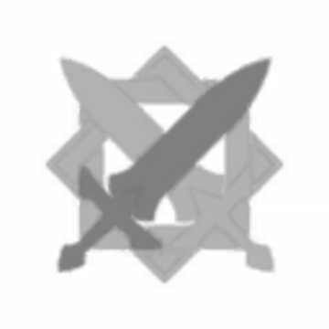

Keqing Card

Best Artifacts

Best Weapons
| Rarity |  5 Stars 5 Stars |
Weapon |  Sword |
|---|---|---|---|
| Element | Electro | Nation | Liyue |
| Birthday | November 20th | Gender | Female |
| Constellation | Trulla Cementarii | Release Date | September 28, 2020 |
| Yunlai Swordsmanship (Normal Attack) |
|---|
| Normal Attack: Perform up to 5 rapid strikes.
Charged Attack: Consumes a certain amount of Stamina to unleash 2 rapid sword strikes. Plunging Attack: Plunges from mid-air to strike the ground below, damaging opponents along the path and dealing AoE DMG upon impact. |
| Stellar Restoration (Elemental Skill) | Hurls a Lightning Stiletto that annihilates her opponents like the swift thunder. When the Stiletto hits its target, it deals Electro DMG to opponents in a small AoE, and places a Stiletto Mark on the spot hit.
Hold: Hold to adjust the direction in which the Stiletto shall be thrown. Stilettos thrown by the Hold attack mode can be suspended in mid-air, allowing Keqing to jump to them when using Stellar Restoration a second time. Lightning Stiletto:If Keqing uses Stellar Restoration again or uses a Charged Attack while its duration lasts, it will clear the Stiletto Mark and produce different effects: If she uses Stellar Restoration again, she will blink to the location of the Mark and unleash one slashing attack that deals AoE Electro DMG. When blinking to a Stiletto that was thrown from a Holding attack, Keqing can leap across obstructing terrain. If Keqing uses a Charged Attack, she will ignite a series of thundering cuts at the Mark's location, dealing AoE Electro DMG. |
| Starward Sword (Elemental Burst) | Keqing unleashes the power of lightning, dealing Electro DMG in an AoE.
She then blends into the shadow of her blade, striking a series of thunderclap-blows to nearby opponents simultaneously that deal multiple instances of Electro DMG. The final attack deals massive AoE Electro DMG. |
| Thundering Penance (Passive) | After recasting Stellar Restoration while a Lightning Stiletto is present, Keqing's weapon gains an Electro Infusion for 5s. |
| Aristocratic Dignity (Passive) | When casting Starward Sword, Keqing's CRIT Rate is increased by 15%, and her Energy Recharge is increased by 15%. This effect lasts for 8s. |
| Land Overseer (Passive) | When dispatched on an expedition in Liyue, time consumed is reduced by 25%. |
| Thundering Might | Recasting Stellar Restoration while a Lightning Stiletto is present causes Keqing to deal 50% of her ATK as AoE Electro DMG at the start point and terminus of her Blink. |
|---|---|
| Keen Extraction | When Keqing's Normal and Charged Attacks hit opponents affected by Electro, they have a 50% chance of producing an Elemental Particle. This effect can only occur once every 5s. |
| Foreseen Reformation | Increases the Level of Starward Sword by 3. Maximum upgrade level is 15. |
| Attunement | For 10s after Keqing triggers an Electro-related Elemental Reaction, her ATK is increased by 25%. |
| Beckoning Stars | Increases the Level of Stellar Restoration by 3. Maximum upgrade level is 15. |
| Tenacious Star | When initiating a Normal Attack, a Charged Attack, Elemental Skill or Elemental Burst, Keqing gains a 6% Electro DMG Bonus for 8s. Effects triggered by Normal Attacks, Charged Attacks, Elemental Skills and Elemental Bursts are considered independent entities. |